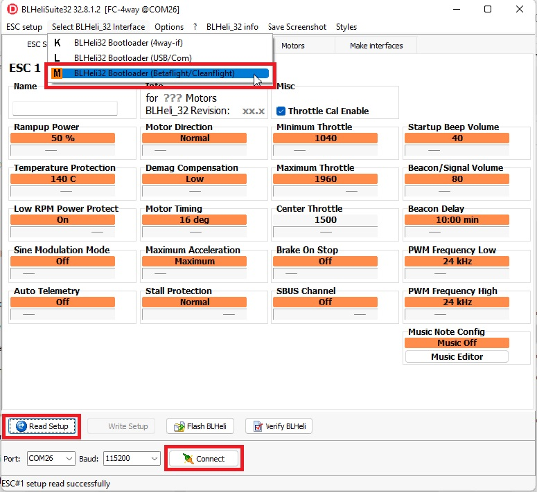

BLHeli32 and BLHeli_S ESCs¶
The BLHeli firmware and configuration applications were developed to allow the configuration of ESCs and provide additional features. ESCs with this firmware allow configuring timing, motor direction, LEDs, motor drive frequency, etc. Before attempting to use BLHeli please follow the DShot setup instructions.
This page includes setup instructions for the following features
Pass-Through support allows the BLHeli application to be used to configure the ESCs while remaining connected to the autopilot
Reversible DShot (aka 3D mode) allows the motor to be spun in either direction
Bi-directional DShot allows the ESCs to send RPM back to the autopilot without the need for an additional telemetry connection
ESC Telemetry allows the ESCs to send RPM, voltage and current information back to the autopilot so that it can be logged, viewed in real-time or even allow the removal of a battery monitor
“BLHeli” covers covers multiple (sometimes competing) projects providing ESCs firmware and accompanying configuration software
BLHeli was the original open source software that is no longer maintained and is not available on modern ESCs
BLHeli32 is closed source and based on 32bit ARM MCUs. All modern BLHeli ESCs use BLHeli32
BLHeli_S is open source and 16bit. This is no longer actively maintained but the last published version, 16.7, is installed by default on “BLHeli_S” ESCs when shipped from the factory
BLHeli_S JESC is paid, closed source software and 16bit allowing it to run on lower end hardware
BLHeli_S BlueJay is free, open source software and 16bit
Pass-Through Support¶
The Pass-Through feature allows BLHeli32 and BLHeli_S ESCs to be upgraded and configured using the corresponding BLHeliSuite32 or BLHeliSuite application (running on the user’s PC) while the ESCs remain connected to the autopilot. To use this feature please follow these steps
Download and install BLHeliSuite32 (for use with BLHeli32 ESCs), BLHeliSuite (for BLHeli_S ESC) or JESC configurator (for use with BLHeli_S JESC) on your PC
Connect your PC to the autopilot using a USB cable and then connect with a ground station (e.g. Mission Planner, QGC).
Set SERVO_BLH_AUTO to 1 to automatically enable pass-through on all outputs configured as motors (e.g. SERVOx_FUNCTION = “Motor1”, “Motor2”, etc) for multicopters and quadplanes or throttle (e.g. those with SERVOx_FUNCTION set to 70 (“throttle”), 73 (“throttle left”) or 74 (“throttle right”)) on rovers. For most multicopters, quadplanes and rovers this will do the right thing but for planes, set SERVO_BLH_MASK to enable pass-through on the appropriate servo outputs.
If your PC is connected to the autopilot using a telemetry radio (instead of using USB cable as recommended above) set SERVO_BLH_PORT to the autopilot port connected to the telemetry radio. Beware that this is does NOT specify the port used for ESC telemetry feedback to your autopilot!
If using a safety switch ensure it is pushed (or disabled by setting BRD_SAFETY_DEFLT = 0). (
BRD_SAFETYENABLEin older firmware versions)Disconnect the ground station (but leave the USB cable connected)
Start the ESC configuration software and connect to the autopilot’s COM port by selecting “BLHeli32 Bootloader (Betaflight/Cleanflight)” from the interfaces menu. Press “Connect” and “Read Setup”. You should be able to upgrade and configure all connected ESCs

{kind=link}
Note
ArduPilot firmware supports the pass-through protocol with up-to-date BLHeli32 firmware and BLHeliSuite32, or BLHeli_S firmware and BLHeliSuite only.
Warning
For pass-through to function, the autopilot must be configured to use one of the DShot protocols. If you wish to eventually use one of the other protocols (e.g. PWM, OneShot125) that the ESC supports, you may still configure the ESCs using Pass-Through (e.g. change motor directions, set min/max values, etc) but then finally re-configure the autopilot to not use DShot. Once the autopilot and ESCs are rebooted the ESC should auto-detect that the ESCs are no longer using DShot.